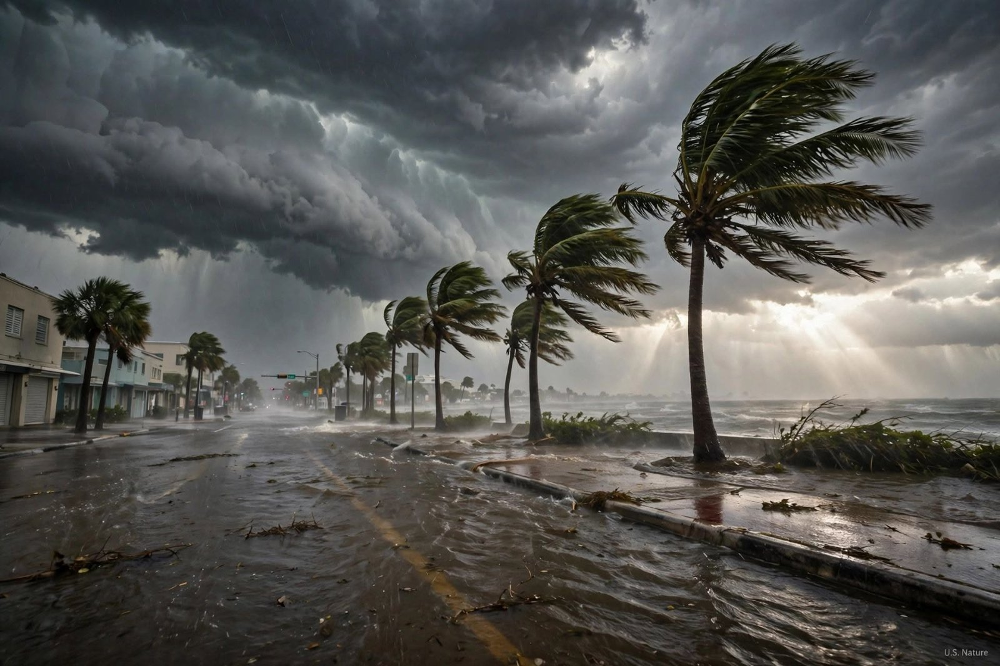

US Floods Trigger Evacuations as Election Day Voting Faces Disruptions
News
Flooding across the American Southwest has forced evacuations, damaged infrastructure and disrupted voting arrangements as the United States prepares for Election Day on November 3, 2026.
Powerful storms have unleashed record rainfall across parts of Arizona, Colorado, New Mexico, Utah and Nevada, leaving communities struggling with rising rivers, submerged roads and damaged homes.
The Associated Press reported on Monday that more than 20 trillion gallons of rain had fallen across the Four Corners region and Nevada over the previous two weeks, citing calculations by a former NOAA scientist.
In Arizona, heavy rainfall overwhelmed drainage systems in Flagstaff, while emergency crews carried out rescues in flood-hit communities. Floodwaters also damaged roads and bridges in Colorado, where residents in some areas were ordered to evacuate.
The unfolding disaster has raised concerns over access to polling stations ahead of Tuesday's elections. Officials in Colorado and Utah have introduced alternative voting arrangements for residents affected by flooding, including those unable to reach their designated polling locations.
In Florida, flooding in St. Lucie County has also prompted temporary polling-place changes, with authorities warning residents about dangerous road conditions.
Although some rivers in the Southwest began receding on Monday, officials warned that flood risks remained, particularly in areas where water levels were still rising.
The flooding adds another challenge for local authorities as they balance emergency response operations with preparations for Election Day.
Authorities continue to urge residents in affected areas to follow evacuation notices, avoid flooded roads and monitor official weather updates.